Overview
Helping Gen Z pick the right patch, and the right way to buy it, within one phone screen.
Joydotz is a Gen Z skincare brand selling hydrocolloid spot patches in three shapes. As the only designer, working with one engineer, I designed the store's homepage entry, product page and the purchase choices on it, across three versions. After launch, 94% of visitors were on a phone, which reshaped what the page needed to do.
Sole designer: UX, UI and visual direction for the storefront.
TeamMe and one engineer, who built it in Shopify.
ScopeHomepage entry, product listing, product page and the buy-once vs. subscribe decision.
Not mineCheckout and the purple "Buy with Shop" button are Shopify's standard components.
Users
Three questions on one product page.
The core shopper is a Gen Z woman browsing on her phone, often right when a breakout shows up and she wants a fix now. Standing on the product page, she is weighing three things at once. Every decision in this case study answers one of them.
Which one is right for me?
Answered by Decisions 1 and 2Buy once, or subscribe?
Answered by Decision 3If I subscribe, can I cancel?
Answered by Decision 3The Problem
Version 1: a default theme that answered none of them.
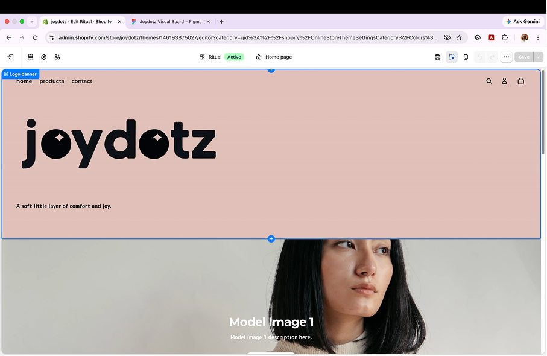
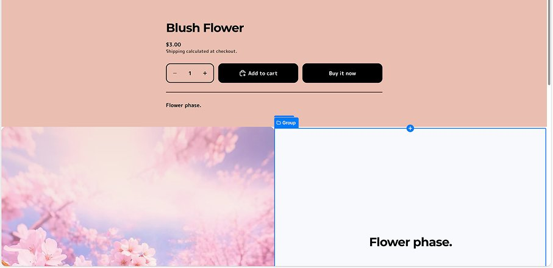
Placeholder images. No real patches.
Three names, no shapes to tell them apart.
No subscription, and two equal buttons.
help her compare two ways to buy in one screen, and subscribe without worry?
Decision 1
What she sees first. Answers Q1.
v2Lead with mood
For version 2 I compared two openings: set the mood with atmosphere and color, or show the patches' shapes straight away. I chose atmosphere, and wrote the outline and storyboard for a homepage film, "A Little Joy Attack", where friends sneak patches onto each other's faces. A production team shot it.
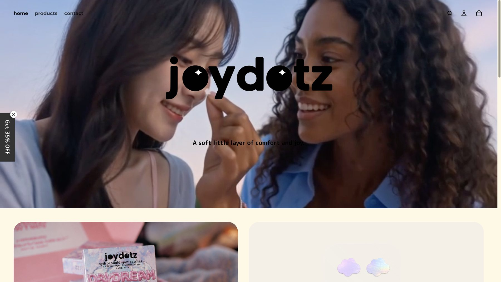
v3Lead with the product
After launch, 94% of visitors arrived on a phone, most likely from influencer posts, Reels and TikTok. On a phone the film was a small, slow moment in front of what people came for. I cared about that film, but it wasn't helping anyone choose, so version 3 drops it and opens on all three shapes, each with its price and a direct path in.
Decision 2
Choosing by shape, not name. Answers Q1.
"Blush Flower", "Daydream Cloud" and "Softwing Butterfly" mean little until you see them. People recognize the shape faster than the product name, so I turned the three shapes into icons above the listing. Hover a product and its shape lights up while the card switches to the patch being worn.
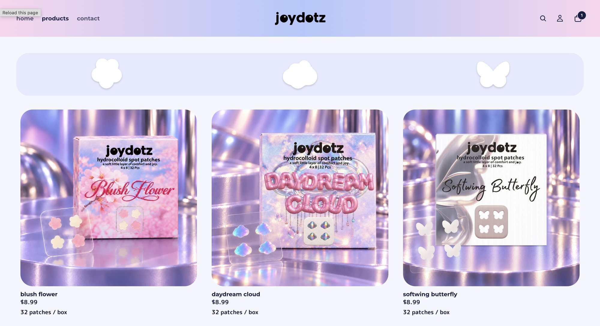
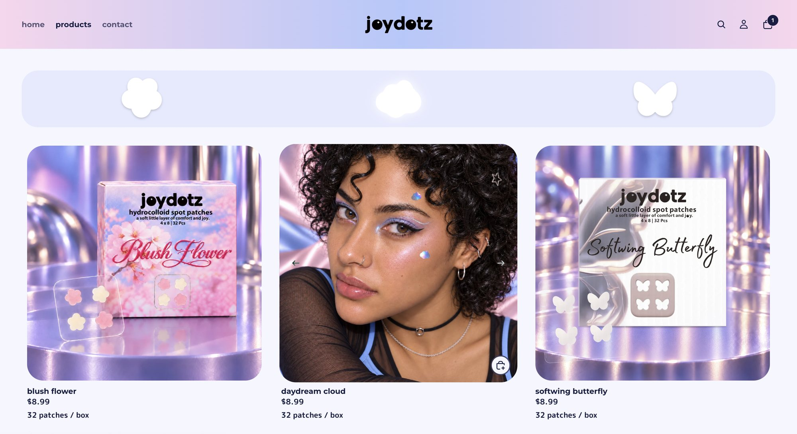
This relied on hover, which phones don't have. It's one reason version 3 puts the shapes themselves on the homepage, so the comparison works with a thumb.
Decision 3
The subscription module. Answers Q2 and Q3.
This is where a hesitant shopper either commits or leaves. The module had to make two ways of buying obvious at a glance, show the benefit of subscribing, and answer "will I get stuck paying?" before she has to ask.
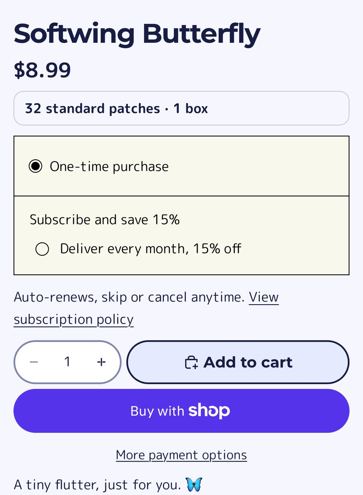
- One framed box, two options
Both choices sit inside a single outline, so it reads as "pick one" before any text is read.
- Radio buttons, not a pill toggle
A control everyone already knows. No guessing whether it's a switch, a tab or a link.
- The saving goes in the heading
"Subscribe and save 15%" puts the benefit first and the details second.
- Frequency spelled out
"Deliver every month" says exactly what happens, so nobody has to guess how often a box arrives.
- "Auto-renews, skip or cancel anytime." + policy link
The fear behind every subscription is being locked in. This one line answers it right where the worry starts, before the button, with the full policy one tap away instead of buried in the footer.
- Clear action order
Quantity and "Add to cart" share one row as the main action; express checkout sits below. The purple "Buy with Shop" button is Shopify's own.
StatesThe choice follows her through
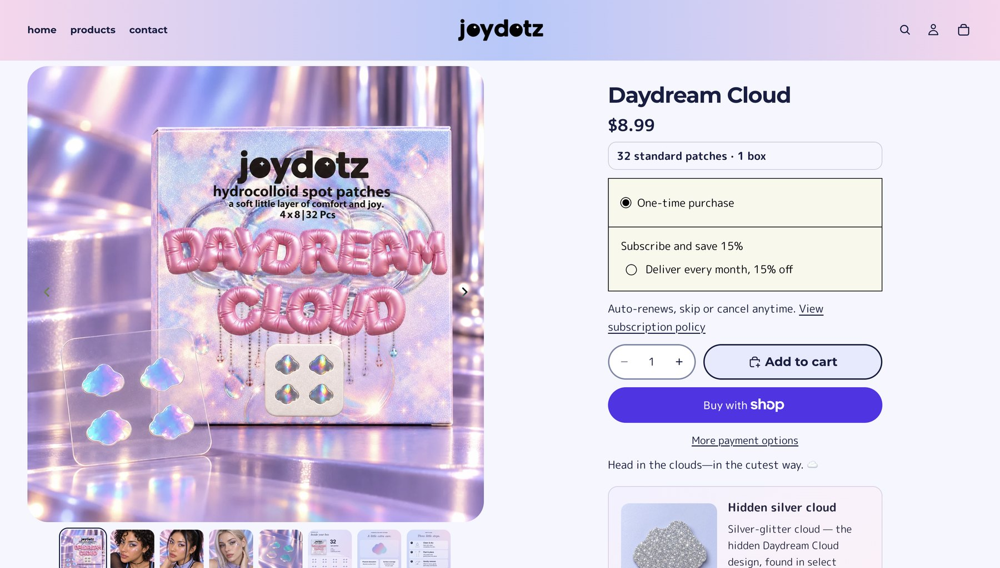
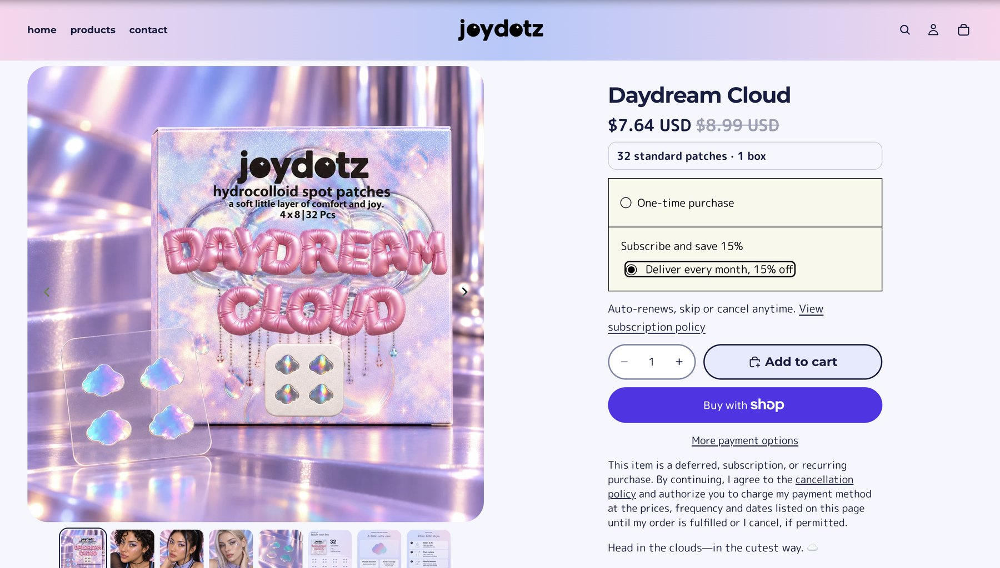
Mobile-first v3
Rebuilt for the 94%.
94%
Version 2 was designed laptop first, with many hover effects. With almost every visitor on a phone, version 3 rebuilds the same store mobile first: shapes visible without hover, the purchase module readable in one screen, and the subscription choice carried into the cart.
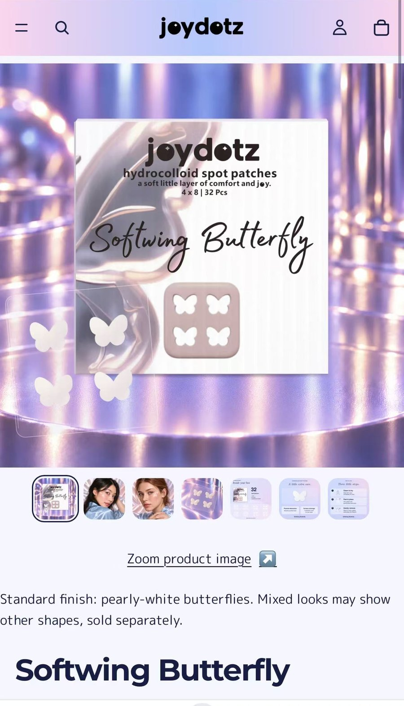
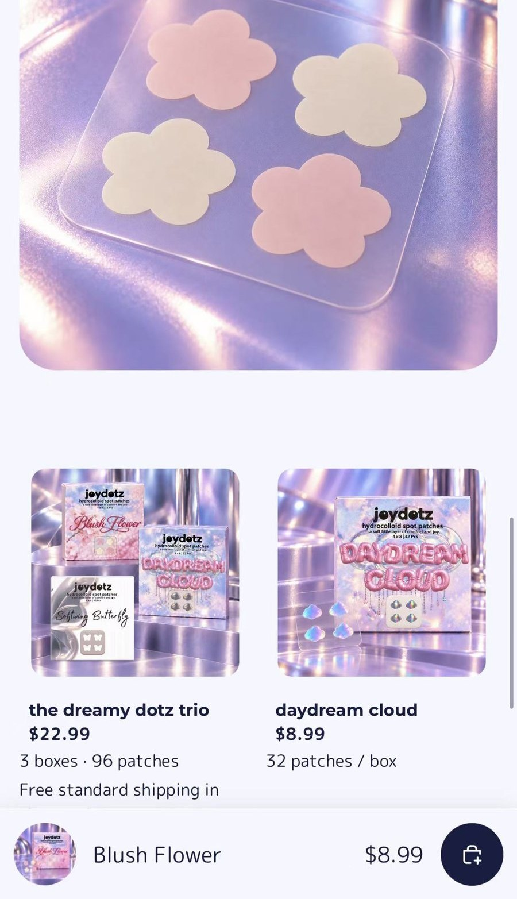
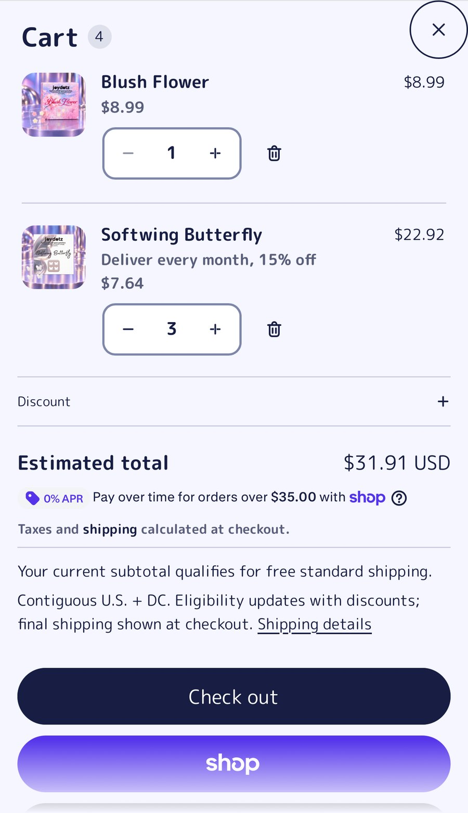
Results & Learnings
What I'll measure, and what I learned.
What I'm tracking
- Add-to-cart rate on product pages, v2 vs. v3.
- Subscription share of all orders, to see whether the reassurance line makes subscribing feel safe.
What I learned
- Design for where people actually are. One number, 94%, outweighed weeks of desktop polish.
- Let go of favorites. The hero film was work I loved, and removing it was the right call for the shopper.
- Answer the worry, not just the question. One sentence about cancelling may matter more than any visual.
Visual System
The new UI stays inside the brand.
#191D42#F3D6EC#B8C8F9#D2CAF1#F8F8EC#F6F6FF